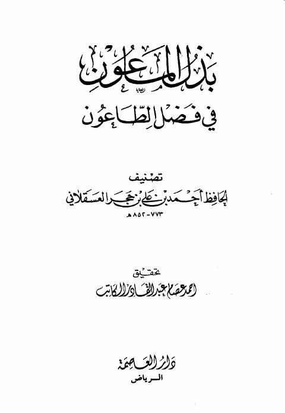

Downloads need an internet connection.
بذل الماعون في فضل الطاعون
Authors: أحمد بن علي بن حجر العسقلاني
Editors: أحمد عصام عبد القادر الكاتب
Publishers: دار العاصمة
**▫️ العنوان: بذل الماعون في فضل الطاعون** ▪️ المؤلف: #أحمد_بن_علي_بن_حجر_العسقلاني ▫️ المحقق: #أحمد_عصام_عبد_القادر_الكاتب ▪️ الناشر: #دار_العاصمة ▫️ بلد النشر: الرياض، #السعودية ▪️ الطبعة: 1 ▫️ عدد الأجزاء: 1 ▪️ الصفحات: 444 ▫️ نوع الوعاء: #كتاب ▪️ التصنيف الرئيسي: #الفقه_وأصوله ۪